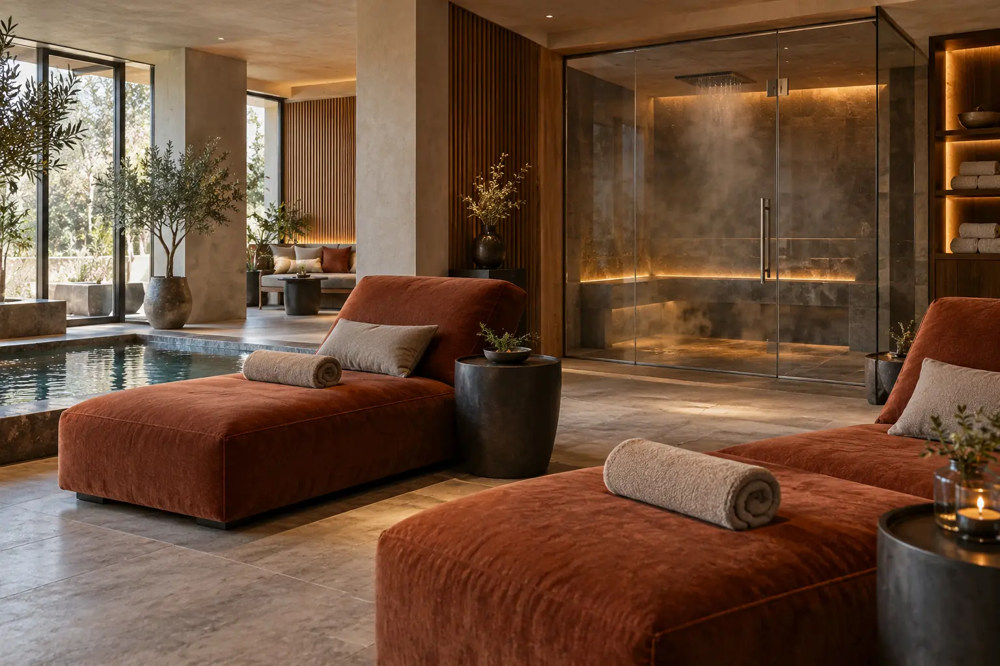

SPA gidas: ritualas, pirtis ir privatus apsilankymas nėra tas pats
Autorius: Madbeauty redakcija · Numatyta 2026 m. lapkričio 13 d. 16:00 (Lietuvos laiku)
SPA ritualas, pirtis ar privati erdvė? Palyginkite paketo komponentus, laiką, privatumo sąlygas ir atskiras naudojamų produktų instrukcijas.

SPA ritualo pavadinimas, apsilankymas pirtyje ir privatus naudojimasis erdve apibūdina skirtingus pasiūlymo aspektus. Ritualas nusako konkrečią paslaugos sudėtį, pirtis – erdvę ar apsilankymą joje, o „privatus“ – privatumo sąlygas. Vien pavadinimo nepakanka suprasti, kas įskaičiuota, kiek laiko skiriama kiekvienai daliai ar ar erdvė bus tik jūsų grupei.
Pavadinimas ir paketo sudėtis – ne tas pats
Lyginkite ne vien žodžius „SPA“, „ritualas“ ar „privatus“, o tai, kokie veiksmai ir erdvės įtraukti. Teikėjų meniu terminai aprašo jų pasiūlymus; jie savaime nereiškia vienodo ar visur taikomo protokolo.
- Procedūra ar ritualas: kokie veiksmai atliekami, kokia jų seka ir kokioms kūno ar veido sritims jie skirti.
- Pirtis ar hamamas: ar tai atskiras apsilankymas erdvėje, ar viena sudėtinio pasiūlymo dalis.
- Privatumas ir laikas: kokia erdvė rezervuojama, ar ji bendra, ir ar nurodytas laikas apima tik procedūrą, ar ir naudojimąsi erdve.
Ką parodo vieno Vilniaus teikėjo meniu
2026 m. spalio 10 d. peržiūrėtame SPA VILNIUS Vilniaus hamamo meniu buvo nurodyta turkiška garų pirtis – 30 min. už 20 Eur; Kese šveitimas ir kūno sutepimas – 40 min. už 60 Eur; taip pat „Marokietiškas“, „1001 naktis“ ir „Aladino“ ritualai – po 60 min. už 90 Eur.
Tai vieno teikėjo, vieno miesto ir konkrečios datos pasiūlymai, kurių apimtis skiriasi. Jie nėra Lietuvos kainų vidurkis, kokybės reitingas ar įrodymas apie Madbeauty paslaugų prieinamumą. Prieš rinkdamiesi patikrinkite, ar meniu ir kaina vis dar galioja bei ką konkrečiai apima.
Kūno ir veido ritualą vertinkite pagal įtrauktas sritis
Jei pasiūlyme minimas kūno ir veido ritualas, patikrinkite, ar įtraukiamos abi sritys, kokia darbų seka ir kokios priemonės naudojamos kiekvienai. Pavyzdžiui, žmogui, kuriam svarbi konkreti kūno procedūra, bendras „ritualo“ pavadinimas neatsakys, ar ta procedūra įeina į paketą. Atsakymą turi pateikti konkretaus pasiūlymo aprašas.
„Privatus SPA“: išsiaiškinkite, kas rezervuojama
Žodis „privatus“ nepasako, ar rezervuojamas visas SPA, viena zona, ar tik individualus laikas procedūrai. Palygindami pasiūlymus užsirašykite, kokia erdvė skirta jūsų grupei, kurios zonos bendros ir ar į kainą įeina procedūra. Taip atskirsite apsilankymą erdvėje nuo jo metu teikiamų paslaugų.
Aromaterapija: išsiaiškinkite, kaip naudojamas kvapas
Aromaterapijos pasiūlyme kvapas gali būti skleidžiamas patalpoje arba naudojama priemonė tepama ant odos. Paklauskite, kuris variantas numatytas ir kokios konkrečios produkto instrukcijos taikomos. NCCIH nurodo, kad aromaterapijos poveikio sveikatai tyrimų įrodymai riboti, todėl vien paslaugos pavadinimas nėra pagrindas tikėtis gydomojo poveikio. Jei nenorite kvapų arba jautriai reaguojate į priemones, pasakykite tai prieš seansą.
Trumpa pasiūlymų palyginimo kortelė
Kiekvienam variantui pasižymėkite šiuos dalykus. Jei aprašyme atsakymo nėra, palyginimas dar nebaigtas.
- Paslaugos veiksmai ir jų seka.
- Įtrauktos procedūros, kūno ar veido sritys ir naudojimosi erdve sąlygos.
- Procedūros trukmė atskirai nuo erdvės naudojimo trukmės, jei jos skiriasi.
- Kas įskaičiuota į nurodytą kainą ir ar yra pasirenkamų dalių.
- Ką reiškia privatumas ir kurios zonos gali būti bendros.
- Naudojamų produktų paskirtis ir su jais susietos priežiūros instrukcijos.
Po procedūros vadovaukitės konkretaus komponento instrukcija
Nėra vienos priežiūros taisyklės, kuri tiktų kiekvienam SPA pasiūlymui: instrukcija priklauso nuo atliktų veiksmų ir naudotų produktų. Prieš vizitą išsiaiškinkite, kokia informacija bus pateikta po procedūros ir kaip pranešti darbuotojui, jei jos metu pasidarytų nejauku. Dėl kvapų, šilumos ar priemonės sukelto diskomforto iškart pasakykite paslaugą teikiančiam žmogui; šis gidas nenustato, kas individualiai jums tinka.
Pirties ir garų erdvės taisyklės gali skirtis pagal vietą. Rinkdamiesi vadovaukitės konkretaus teikėjo pateikta informacija, o ne iš bendro paslaugos pavadinimo numanomomis sąlygomis.
Procedūrų aprašai kataloge: Ritualai, Pirtys ir vanduo, Poilsio procedūros, SPA ir poilsis. Miestą ir realaus teikėjo pasiūlymą pasirinkite kataloge, kai tokia pasiūla pateikta.
Susiję gidai
Šaltiniai
- SPA VILNIUS · hamamo ritualų apimtis · www.spavilnius.lt
- NVSC · pirties veiklos sauga · nvsc.lrv.lt
- NCCIH · aromaterapija · www.nccih.nih.gov
- SPA Vilnius: Vilniaus hamamo meniu · www.spavilnius.lt